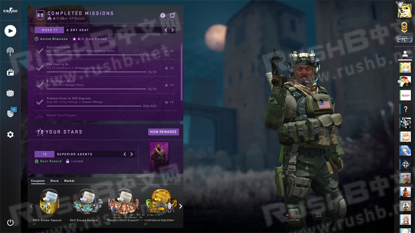
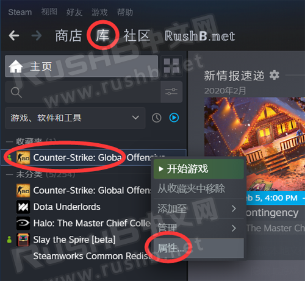
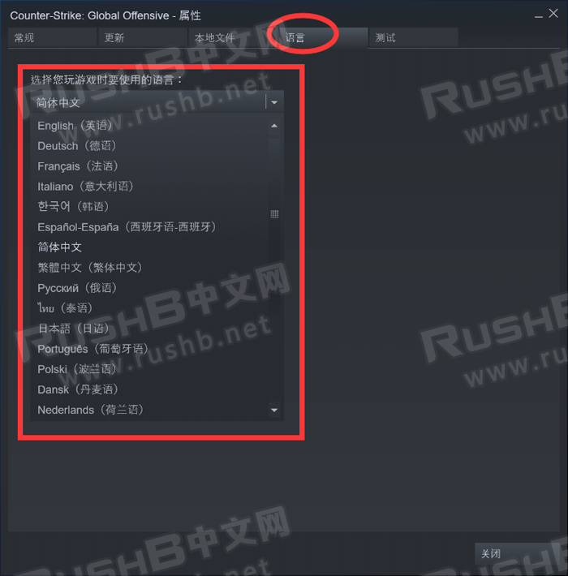
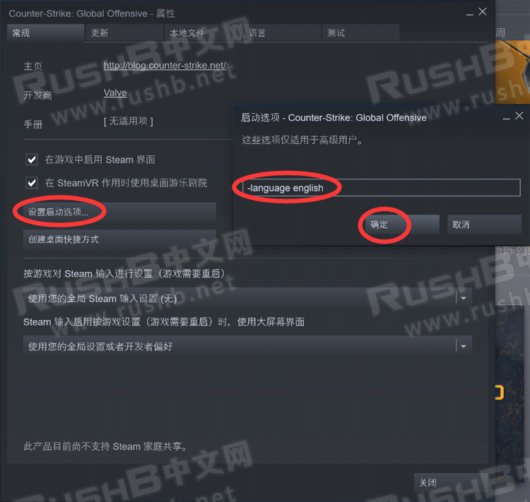
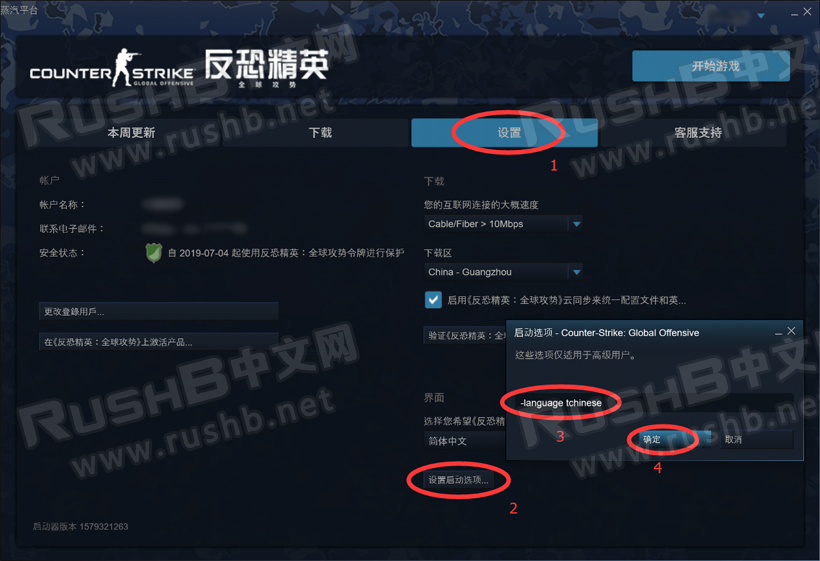

CSGO RushB中文网
CSGO RushB中文网
作为全球火热的射击竞技游戏，CSGO支持多种语言，本文将教新人玩家修改成需要的语言，包括繁简中文、英文等。另外某些情况被修改语言的玩家也可通过以下方法修改。
*本教程支持国际版和国服版，并可将CSGO客户端设置成指定的语言，可与Steam客户端分开，比如Steam客户端为中文，CSGO客户端为英文。
*一般CSGO新加入的内容只有英文，是因为翻译团队还来不及翻译，过几天更新就好。
*2月4日更新中，V社总算支持游戏语言修改，方法见下。

Steam客户端直接修改语言方法：
此方法于2月4日更新，玩家可直接在游戏属性中修改语言，更加方便。
打开Steam客户端——点击“库”——在左边的游戏列表找到CSGO，右键——点击“属性”，如图：

然后在属性窗口中点击“语言”，在下拉框选择需要的语言种类，之后启动游戏既是想要的语言。

Steam版启动项修改语言方法：
打开Steam客户端——点击“库”——在左边的游戏列表找到CSGO，右键——点击“属性”，如图：
然后在CSGO属性窗口中，点击“设置启动选项”——在新弹出的启动选项窗口中输入“-language english”——点击“确定”，之后重启游戏即是英文语言，其他语言包括繁简中文等启动项请看本文下方。

国服启动器修改语言方法：
如图，在启动器窗口中，点击“设置”——“设置启动选项”——输入“-language tchinese”——点击“确定”，游戏客户端即可变成繁中，其他语言启动项见下方。

各语言启动项：
简体中文
-language schinese
繁体中文
-language tchinese
英语
-language english
捷克语
-language czech
丹麦语
-language danish
荷兰语
-language dutch
芬兰语
-language finnish
法语
-language french
德语
-language german
匈牙利语
-language hungarian
意大利语
-language italian
日语
-language japanese
韩语
-language koreana
拉丁语
-language latam
挪威语
-language norwegian
波兰语
-language polish
葡萄牙语
-language portuguese
葡萄牙语-巴西
-language brazilian
罗马尼亚语
-language romanian
俄语
-language russian
西班牙语
-language spanish
瑞典语
-language swedish
泰语
-language thai
土耳其语
-language turkish
保加利亚语
-language bulgarian
乌克兰语
-language ukrainian